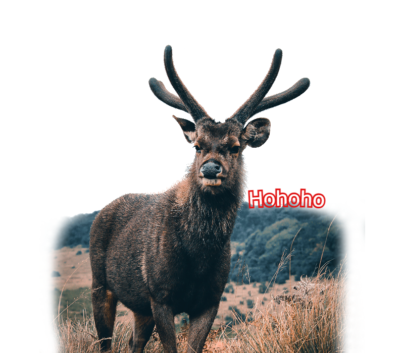
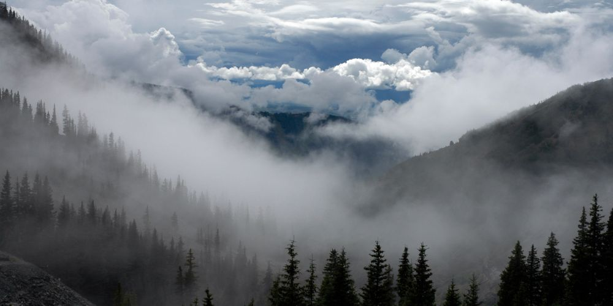
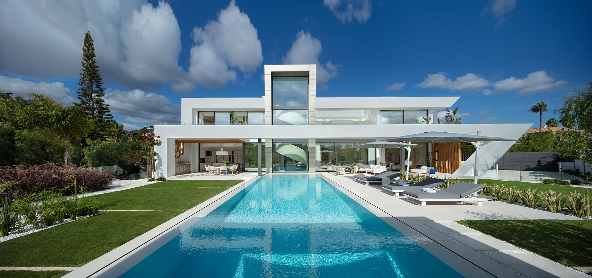

Welkom op mijn foto website. Deze foto's zijn afkomstig uit de verzameling van W3Schools. W3Schools heeft verschillende rechtenvrije foto's die perfect zijn van afmeting.
Deze collectie dient als het ideale fundament voor dit webproject, waarbij de focus ligt op een snelle laadtijd en een responsieve weergave. Dankzij deze zorgvuldig gekozen placeholders blijft de interface overzichtelijk en de gebruikerservaring optimaal op elk apparaat.

We gaan graag in de natuur op vakantie. Hier vind je enkele voorbeelden




Reizen is een avontuur op zich, en onderweg kom je vaak onverwachte schoonheid tegen. Of het nu gaat om de levendige straatkunst in een bruisende stad of de serene charme van een pittoresk dorpje, deze momenten onderweg zijn vaak net zo memorabel als de bestemming zelf.


Deze collectie hierboven viert de grootsheid van fotografie, maar vergeet de kleine momentjes niet. Want hoe inspirerend een reis ook kan zijn, de eenvoud van je eigen kleine plekje is af en toe precies wat je nodig hebt.
